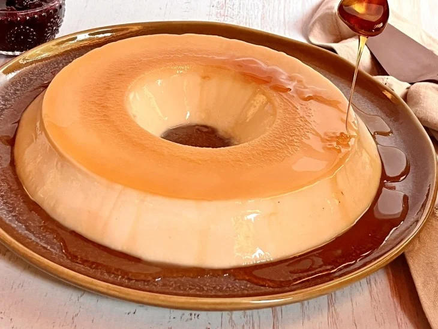

Pudim simples
Ingredientes
2 xícaras de chá de açúcar
1/2 xícara de chá de água
ingredientes do pudim
1 lata de leite condensado (395 gramas)
1 lata de creme de leite (300 gramas)
1 lata de leite (use a lata de leite condensado como medida)
2 pacotinhos de gelatina sem sabor (12 gramas cada)
Modo de preparo
Reúna os ingredientes do pudim simples;
Para preparar a calda, coloque o açúcar e a água em uma forma redonda de 20 cm, com um furo no meio, misture e leve ao fogo médio até ferver;
Quando começar a ferver, mexa a forma lentamente para que a calda não empedre, até ficar um caramelo dourado;
Retire do fogo e espalhe a calda pela forma de modo uniforme e reserve;
Para fazer o pudim, dissolva a gelatina conforme as instruções do produto;
Em um liquidificador, coloque o leite condensado, o creme de leite, o leite, a gelatina dissolvida e bata até formar um creme homogêneo e liso;
Despeje a massa na forma com a calda e leve para a geladeira até ficar bem firme (no mínimo 4 horas);
Uma forma contendo pudim simples.
Desenforme e sirva bem gelado. Bom apetite!